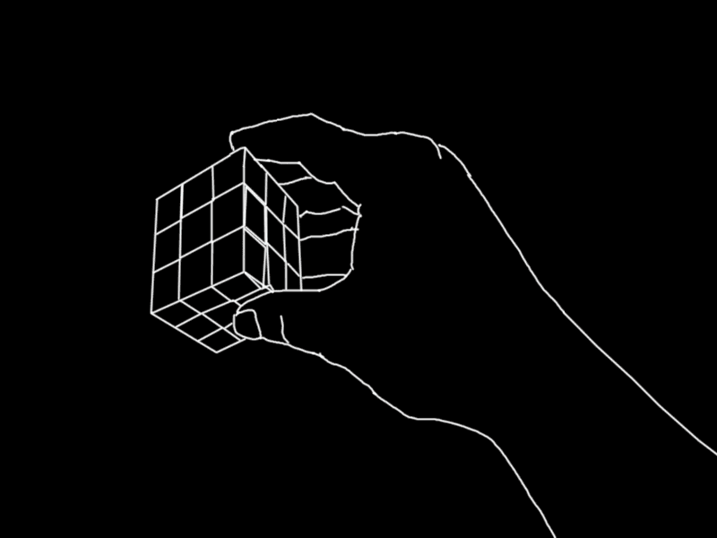
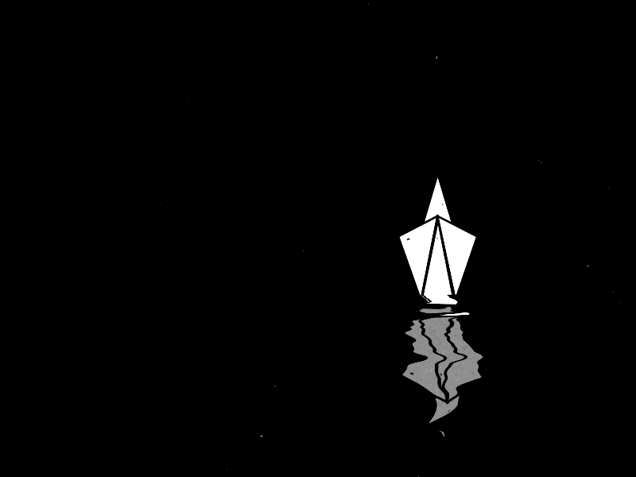

"Wer nach außen
schaut, träumt;
wer nach innen
schaut,
erwacht."

Verlier dich nicht in Gedanken
Lassen Sie die Sorgen los und tauchen Sie in die Welt der Astrologie ein – das Leben wird dadurch heiterer und klarer.
Erstellen Sie Ihre persönliche Horoskopkarte, und Sie werden vieles über sich selbst verstehen. Bei Fragen wenden Sie sich gern an einen erfahrenen Astrologen. Fragen Sie den Astrologen
Vedischer Horoskop erstellen
Die Vorteile der Astrologie
- Selbsterkenntnis
- Partnerschaft
- Zukunftsplanung
- Stärken entwickeln
- Schwächen erkennen.
Nutzen der Astrologie
Selbsterkenntnis
Astrologische Einblicke
Jederzeit nutzbar
Astrologie bietet wertvolle Einblicke in Ihre Persönlichkeit, einzigartigen Stärken und verborgenen Potenziale und hilft Ihnen, sich selbst besser zu verstehen und tiefer zu reflektieren.
Durch die detaillierte Analyse Ihrer astrologischen Karte können Sie neue und spannende Facetten Ihrer eigenen Identität entdecken.
Partnerschaft
Verständnis und Harmonie
Individuell anwendbar
Durch astrologische Deutungen entdecken Sie die Dynamik und Harmonie in Ihren Beziehungen und gewinnen ein tieferes Verständnis für die individuellen Bedürfnisse Ihres Partners.
Astrologie kann Ihnen helfen, eine harmonische Balance in Ihrer Partnerschaft zu finden und Ihre Kommunikation auf eine neue Ebene zu heben.
Persönliche Entwicklung
Zukunftsplanung
Mit Klarheit voranschreiten
In jeder Lebensphase
Astrologie unterstützt Sie bei der bewussten Planung Ihrer Zukunft und hilft, klare und fundierte Entscheidungen zu treffen, die im Einklang mit Ihren inneren Zielen stehen.
Mit astrologischen Einblicken können Sie künftige Herausforderungen besser einschätzen und Ihre Schritte vorausschauend gestalten.
Schwächen in Stärken verwandeln
Selbstverbesserung
Ein lebenslanger Prozess
Nutzen Sie die Erkenntnisse der Astrologie, um Ihre Schwächen zu identifizieren und in Stärken zu verwandeln, für ein erfüllteres Leben und stetige persönliche Entwicklung.
Durch das Verstehen und Akzeptieren Ihrer weniger starken Seiten können Sie gezielt daran arbeiten, positive Veränderungen anzustoßen.
Astrologische Elemente
Die folgenden sechs Elemente ermöglichen tiefgehende Einblicke in das Leben und die Persönlichkeit.
-
 Zeichen des TierkreisesDie zwölf Sternzeichen und ihre einzigartigen Merkmale.
Zeichen des TierkreisesDie zwölf Sternzeichen und ihre einzigartigen Merkmale. -
PlanetenDie Einflüsse der Himmelskörper auf das Leben.
-
 Aspekte der PlanetenDie Beziehungen zwischen den Planeten und ihre Bedeutungen.
Aspekte der PlanetenDie Beziehungen zwischen den Planeten und ihre Bedeutungen. -
PlanetenperiodenZeitabschnitte, in denen Planeten bestimmte Einflüsse ausüben.
-
NakshatrasDie 27 Mondstationen der vedischen Astrologie und ihre Einflüsse.
-
 Häuser im HoroskopDie verschiedenen Aspekte des Lebens werden beleuchtet.
Häuser im HoroskopDie verschiedenen Aspekte des Lebens werden beleuchtet.
Zeichen des Tierkreises
Die zwölf Sternzeichen sind viel mehr als bloße astrologische Symbole – sie verkörpern verschiedene Dimensionen menschlicher Erfahrungen und Lebensansätze. Jedes Zeichen, vom feurigen Widder bis zum mystischen Fische, ist einzigartig in seiner Energie, seinen Stärken und Herausforderungen. Die Sternzeichen wirken wie ein Spiegel, der uns unsere inneren Motivationen, Charakterzüge und Verhaltensmuster zeigt. Sie offenbaren uns, wer wir im Kern sind und was uns antreibt.
In der Astrologie hat jedes Zeichen eine tiefe Verbindung zu bestimmten Planeten, Elementen und Qualitäten, die unseren Lebensweg beeinflussen. Der Löwe, geführt von der Sonne, steht für Selbstbewusstsein und Ausdruck; die Waage, geprägt von der Venus, repräsentiert Harmonie und Ästhetik. Indem wir unser Sternzeichen verstehen, können wir auch besser verstehen, welche Stärken und Herausforderungen uns im Leben begleiten und welche Lebensthemen immer wieder in den Vordergrund treten.
Planeten
Die Planeten sind die kraftvollen Akteure in der Astrologie, die unseren Alltag, unsere Persönlichkeit und unsere Lebenserfahrungen tief beeinflussen. Jeder Planet trägt eine besondere Energie und symbolisiert bestimmte Lebensprinzipien. Merkur, der Planet der Kommunikation, prägt unsere Denkweise und Ausdruckskraft, während Venus, der Planet der Liebe, uns in den Bereichen Beziehungen, Ästhetik und Harmonie beeinflusst. Die äußeren Planeten wie Uranus, Neptun und Pluto stehen für kollektive, transformative Kräfte und symbolisieren größere Zyklen, die uns auf tiefere, oft unbewusste Weise prägen.
Die Position der Planeten zum Zeitpunkt unserer Geburt bildet eine Art energetischen Fingerabdruck, der uns ein Leben lang begleitet. Diese planetaren Energien interagieren miteinander und entfalten im Laufe der Zeit unterschiedliche Einflüsse, die sich in Lebensereignissen, inneren Wachstumsprozessen und Beziehungen widerspiegeln. Wenn Mars zum Beispiel stark in unserem Horoskop steht, erleben wir möglicherweise viel Tatendrang und Entschlossenheit, während eine starke Mondpräsenz Sensibilität und Empathie verstärken kann.
Häuser im Horoskop
Die zwölf Häuser im Horoskop repräsentieren die verschiedenen Lebensbereiche, die unser Dasein prägen. Jedes Haus symbolisiert einen bestimmten Aspekt unseres Lebens: Das erste Haus betrifft das Selbst und die persönliche Identität, das vierte Haus steht für Zuhause und Familie, das zehnte für Karriere und öffentliches Ansehen. Die Häuser sind wie Fenster, durch die wir das Leben in all seinen Facetten erfahren.
Planeten, die in bestimmten Häusern positioniert sind, beeinflussen stark, wie wir uns in diesen Lebensbereichen verhalten und welche Herausforderungen oder Geschenke uns dort begegnen. Ein starker Saturn im zweiten Haus könnte zu einem bewussten Umgang mit Finanzen führen, während ein prominenter Jupiter im neunten Haus die Lust auf Reisen und geistige Expansion verstärkt. Die Häuser ermöglichen es uns, zu erkennen, welche Lebensbereiche für uns von besonderer Bedeutung sind und wo unser größtes Wachstumspotenzial liegt.
Aspekte der Planeten
Die Aspekte der Planeten – die Winkelverhältnisse, die sie zueinander bilden – bringen Bewegung und Dynamik in unser Horoskop. Ein Trigon, ein harmonischer Winkel, zeigt unterstützende Einflüsse an, während ein Quadrat Spannungen und Herausforderungen symbolisiert. Diese Aspekte sind die feinen Verbindungen, die wie unsichtbare Fäden die Energien der Planeten verknüpfen und unsere inneren Entwicklungen steuern.
Jeder Aspekt stellt eine Art kosmische Kommunikation dar, die uns Hinweise auf persönliche Konflikte, innere Kämpfe und auch unterstützende Kräfte gibt. Eine Opposition zwischen Mond und Venus könnte uns herausfordern, unsere Bedürfnisse in Beziehungen klar zu definieren, während ein Sextil zwischen Merkur und Mars eine scharfe Denkweise und schnellen Verstand symbolisiert.
Planetenperioden
Die Planetenperioden, auch bekannt als Dashas in der vedischen Astrologie, markieren besondere Lebensphasen, die von den Energien eines bestimmten Planeten dominiert werden. Während dieser Perioden kann der Einfluss eines Planeten stark in den Vordergrund treten und unsere Lebensumstände und Entscheidungen beeinflussen. Eine Mars-Dasha könnte eine Phase der Entschlossenheit und des Willens sein, während eine Mond-Dasha uns einfühlsamer und emotional offener machen kann.
Jede Planetenperiode bringt neue Herausforderungen und Wachstumsmöglichkeiten mit sich. Diese Phasen helfen uns, die Höhen und Tiefen des Lebens besser zu verstehen und anzunehmen. Die Dashas laden uns ein, mit den kosmischen Rhythmen zu fließen und die Energien der Planeten als Wegbegleiter auf unserer Lebensreise zu nutzen.
Nakshatras
Die 27 Nakshatras sind die mystischen Mondhäuser der vedischen Astrologie und bieten tiefe Einblicke in unsere emotionale und spirituelle Natur. Jedes Nakshatra trägt einzigartige Energien und offenbart uns spezifische Themen und Qualitäten. Die Nakshatras erzählen von unseren verborgenen Motiven, unseren emotionalen Reaktionen und spirituellen Bestrebungen. Sie sind wie kosmische Symbole, die uns die innere Landschaft unseres Bewusstseins näherbringen.
Ein Nakshatra wie Ashwini steht für Energie und Heilung, während Shravana die Qualitäten des Zuhörens und Lernens betont. Jedes Nakshatra beeinflusst unsere Persönlichkeit auf subtiler Ebene und wirkt auf unsere Beziehungen, Karriere und spirituelle Entwicklung ein. Diese alten Mondhäuser spiegeln unsere tiefen Seelenverbindungen und spirituellen Absichten wider.
 B. V. Raman
Indischer Astrologe
B. V. Raman
Indischer Astrologe
"Astrologie ist die Sprache des Universums. Wer sie versteht, kann die Geheimnisse des Lebens und der Zeit entschlüsseln."
 K. N. Rao
Experte für vedische Astrologie
K. N. Rao
Experte für vedische Astrologie
"Astrologie zeigt uns nicht nur die Zukunft, sondern auch den Weg zur Selbsterkenntnis und zum inneren Frieden."
 Dr. S. S. Chatterjee
Astrologe und Forscher
Dr. S. S. Chatterjee
Astrologe und Forscher
"Die Planeten sind wie Lehrer, die uns Lektionen in Geduld, Weisheit und Stärke vermitteln."
 Vedic Pandit
Astrologischer Berater
Vedic Pandit
Astrologischer Berater
"In der vedischen Astrologie spiegelt jede planetarische Bewegung unser inneres Wachstum und die universelle Harmonie wider."

Kontakt aufnehmen
Ich freue mich, von Ihnen zu hören. Ob Sie eine Frage zur Astrologie haben oder einfach über das Universum und spirituelle Themen sprechen möchten – schreiben Sie mir.